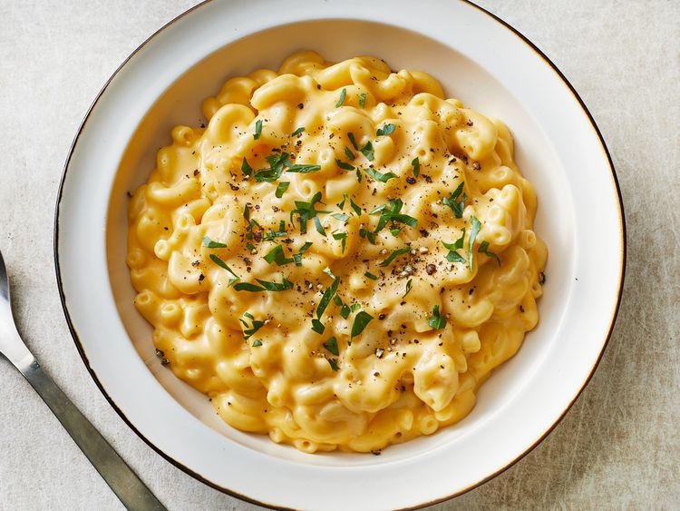

Quick, easy, and tasty macaroni and cheese dish. Fancy, designer mac and cheese often costs forty or fifty dollars to prepare when you have so many expensive cheeses, but they aren't always the best tasting. This simple recipe is cheap and tasty.
Ingredients
- 1/8 Ounce of a box of Elbow Macaroni
- 1/4 cup of butter
- 1/4 cup of all-purpose flour
- 1/2 teaspoon of salt
- Ground Black Pepper to taste
- 2 cups of milk
- 2 cups of shredded Cheddar cheese